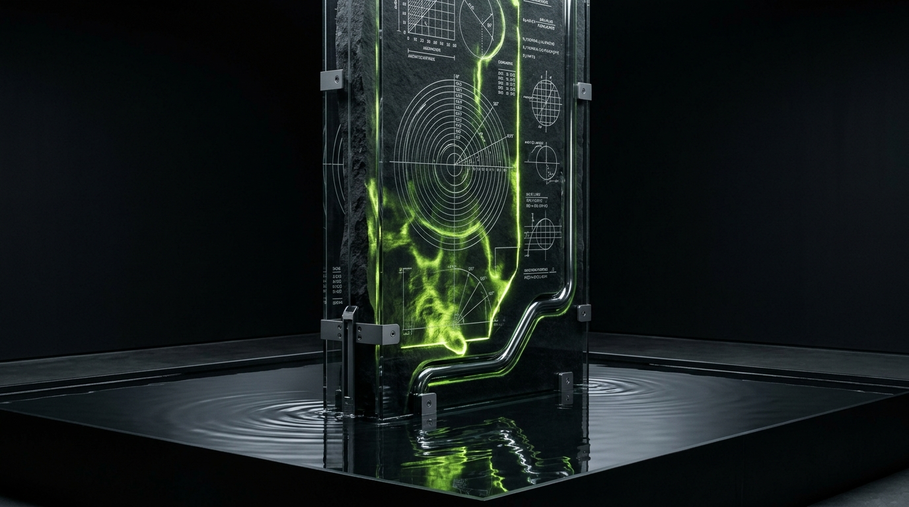

Water Never
Fights the Tide.
Neither Should Your Brand.
In nature, even the strongest current is governed by lunar and planetary rhythm. Every business carries two signatures: the commercial strategy it executes in the market, and the foundational timing and temperament of the people building it. Powered by our sister research practice Reva Astro, NEER’s Astro-Branding practice reads your venture through classical Vedic astrology, numerology, Shilpa Shastra geometry, and Vastu—and translates those insights into a modern brand name, visual identity, and 90-day launch calendar.

Vedic Intelligence as a
Deterministic Diagnostic Tool.
Every business begins with an act of human creation—and every human carries an imprint of time, space, and planetary rhythm. When an identity clashes with the founder’s elemental makeup or launches during discordant cosmic weather, friction follows.
What Astro-Branding Actually Is
- 01. Acoustic & Phonetic Engineering: Calculating brand names against founder Nakshatra sound-frequencies using the Katapayadi and Sanskrit Varnamala matrices.
- 02. Spatial & Geometric Ratios: Applying Shilpa Shastra's Ayadi Shadvarga (six mathematical formulas) to determine exact logo bounding boxes and structural packaging aspect ratios.
- 03. Temporal Harmonic Precision: Identifying exact commercial launch windows (Muhurta) that optimize capital conductivity, investor sentiment, and customer acquisition.
What It Is Not
- ✕ No superstition, gemstone prescribing, or fatalistic horoscopes.
- ✕ No cheap zodiac logos or cliché cosmic clip art.
- ✕ No substitute for product-market fit, unit economics, or code excellence.
- ✕ Zero fortune-telling; strictly mathematical diagnostic alignment.
The Four Diagnostics of
Astro-Branding.
We combine four classical analytical frameworks before a single creative mark is drawn or a line of code is written:

Vedic Astrological Audit
// D1 · D9 · D10 Charts
Analyzing founder charts, planetary Dasha cycles, and the commercial birth chart to uncover core planetary strengths, blind spots, and timing windows.
Business Numerology & Naming
// Nama Nakshatra Acoustics
Engineering names where starting syllables, compound letter-counts, and vowel vibrations harmonize with founder planetary frequencies.
Shilpa Shastra Proportions
// Ayadi Shadvarga Formulas
Calculating logo geometry, typographic grids, and structural packaging proportions according to the six classical architectural equations.
Workspace & Digital Vastu
// Cardinal Zone Ergonomics
Aligning physical headquarters zones (finance in North, creative in North-East) and digital UX user flow with elemental cardinal directions.
The Reconciliation Matrix:
Cosmic Truth × Market Reality.
A common failure of amateur astro-consultants is demanding that a high-end corporate brand use gaudy yellow fonts or cheap astrological glyphs because "Jupiter requires it." At NEER, we operate under the Reconciliation Framework:
Classical Vedic Requirement
What the founder’s astrological chart, Nakshatra acoustics, and temporal Muhurta mathematically dictate for optimal commercial conductivity.
Category & Market Reality
What the competitive landscape, customer psychology, luxury design codes, and investor standards demand for serious institutional credibility.
The NEER Alchemy
If a chart requires solar/fire resonance, we calibrate it into smoked amber glass packaging or brushed dark titanium with laser caustics—never gaudy red-and-gold. Both mandates are honored with zero compromise.
What You Actually Receive:
Physical & Strategic Assets.
Astro-Branding does not end with an abstract PDF report. It precipitates into tactile, production-ready brand infrastructure:

The Sovereign Brand Book
// Identity & Ayadi Geometry
Complete brand identity system, phonetic naming rationale, typography pairings, Ayadi Shadvarga mathematical bounding grids, and tactile physical packaging guidelines.
90-Day Muhurta Matrix
// Precision Temporal Calendar
Specific calendar dates and exact hourly windows for company incorporation, contract execution, digital flagship launch, and commercial campaign rollout.
Spatial Vastu Blueprint
// Architectural Ergonomics
Directional layout schematic for executive suites, engineering desks, treasury/finance zones, and data centers, aligned with the eight cardinal Vastu purusha zones.
Align Your Venture with
Unshakable Natural Laws.
Whether launching a new enterprise or realigning an established market leader, our diagnostic scholars review candidate charts in confidential consultation.